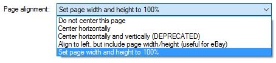
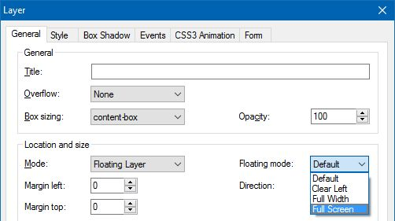
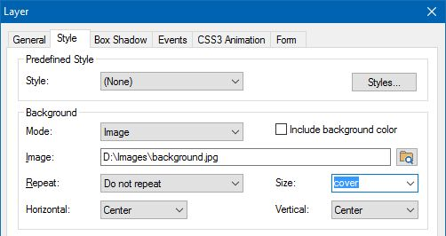
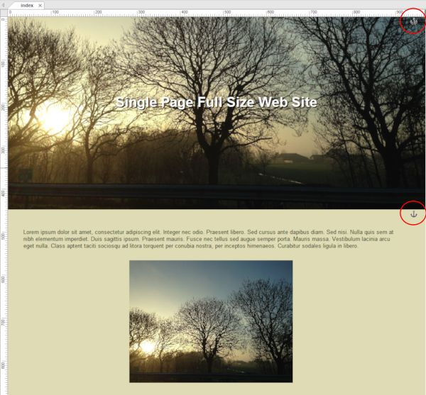

Creating a Full Screen / Single Page Layout
Many modern websites use single page / full screen layouts. In this type of layout most content is on the main page and bookmarks are used to navigate between sections on the page. The individual sections of the page always use the full width and height of the view port.
In WYSIWYG Web Builder 11 you can easily create these type of layouts with layers.
Step 1
Select 'Set page width and height to 100%' in the Page Properties.
Many modern websites use single page / full screen layouts. In this type of layout most content is on the main page and bookmarks are used to navigate between sections on the page. The individual sections of the page always use the full width and height of the view port.
In WYSIWYG Web Builder 11 you can easily create these type of layouts with layers.
Step 1
Select 'Set page width and height to 100%' in the Page Properties.
You can view a live demo here:
https://www.wysiwygwebbuilder.tk/support/singlepage_fullscreen.html
Download the demo project:
https://www.wysiwygwebbuilder.tk/support/singlepage_fullscreen.zip
Related tutorial:
Bookmarks (Jump to another part of the page)
How to use Affix and ScrollSpy?
https://www.wysiwygwebbuilder.tk/support/singlepage_fullscreen.html
Download the demo project:
https://www.wysiwygwebbuilder.tk/support/singlepage_fullscreen.zip
Related tutorial:
Bookmarks (Jump to another part of the page)
How to use Affix and ScrollSpy?
Step 2
Insert a Layer. Select 'Floating Layer' and set the floating mode to Full Screen.
During design time, the height of the layer does not have to be 100%. Just make it large enough for the content.
Insert a Layer. Select 'Floating Layer' and set the floating mode to Full Screen.
During design time, the height of the layer does not have to be 100%. Just make it large enough for the content.
Step 4
Add more floating layers as described in step 2 and 3. The layers will automatically be stacked in the workspace.
Step 5
Add bookmarks at the top of each section. The bookmark should be inside the layer.
Now you can use one of the navigation objects to create a menu and link to the bookmarks.
Add more floating layers as described in step 2 and 3. The layers will automatically be stacked in the workspace.
Step 5
Add bookmarks at the top of each section. The bookmark should be inside the layer.
Now you can use one of the navigation objects to create a menu and link to the bookmarks.
Step 3
In the Style Properties select a background image and set the background size set to 'cover' so it will always cover the full screen.
Of course you can also use a solid background.
In the Style Properties select a background image and set the background size set to 'cover' so it will always cover the full screen.
Of course you can also use a solid background.



